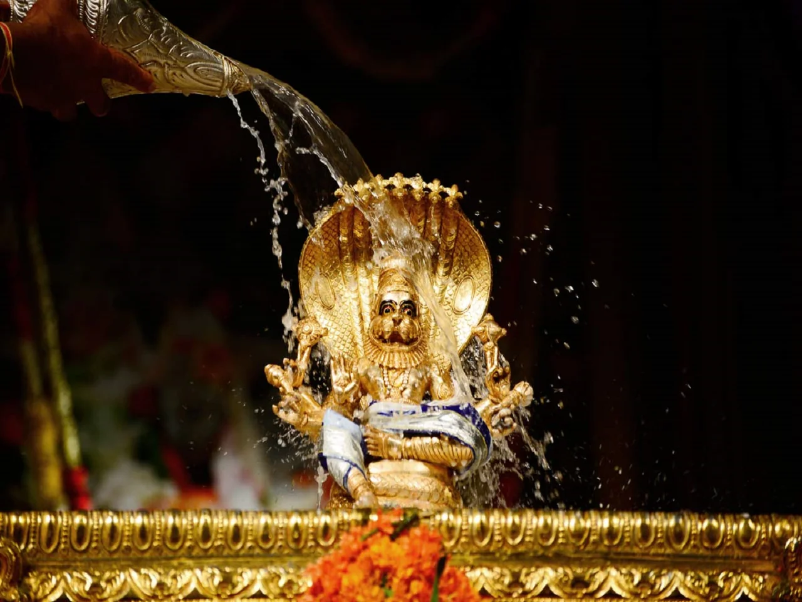

Main Festivals

Sri Jagannatha Ratha Yatra

Ratha Yatra or Chariot festival is any public procession in a chariot. The annual Rathayatra, that involve a public procession with a chariot with deities Jagannath (Vishnu avatar), Balabhadra (his brother), Subhadra (his sister) and Sudarshana Chakra (his weapon) on a ratha, a wooden doula-shaped chariot. It attracts many devotees who join the procession each year in the town of Metpally.
Srila Prabhupada Vyasapuja

His Divine Grace A.C. Bhakti Vedanta Swami Prabhupada founder of ISKCON propagated Krsna Consiousness all over the world. On occasion of his divine appearance on 6th August, we are celebrating the festival at ISKCON Metpally Dham.
Nandotsav
Nandotsav is a festival celebrated the day after the festival Janmashtami, which celebrates the Lord Krishna's birth. It is believed that all the villagers of Braj visited Nand Baba's house to see little Krishna and congratulate Mata Yashoda. Nand Baba distributed ornaments, clothes, cattle and various other valuables among saints and sages. All saints and sages bestowed blessings on Lord Krishna in return.
Balaram Jayanti

Appearance day of Sri Balaram, Lord Balaram is the elder brother of Krishna, represents Guru Tatva and gives strength to perform Bhakti.
Sri Narasimha Chaturdashi
It's the appearance day of Sri Narasimha Dev. He is protector of devotees and removes fear from their hearts.
Brahmotsavam
On this auspicious day of Akshaya Tritiya, Sri Sri Radha Giridhari rides on palanquin. Also, this is starting day of Chandan Yatra where Lord's whole body is smeared with sandalwood paste for 21 days which provides the Lord relief from the scorching heat of summer.
Gaur Purnima

Is the appearance day of Sri Chaitanya Mahaprabhu, the most merciful form of the lord. He came to inaugurate Harinam Sankirtan in this age of Kali.
Nityananda Trayodashi

It is the appearance day of Lord Nityananda, he is an intimate associate of Sri Chaitanya Mahaprabhu in spreading Krishna Consciousness in this world.
Gita Jayanti
The Bhagavad-Gita, "The Lord’s Song", is understood as a conversation between Krishna and Arjuna but meant for the whole world’s benefit. On this day, devotees gather to glorify the sacred conversation.
Support us

Like us on Facebook
Prabhupada daily quote
Daily Schedule
05:05 AM - Tulsi Arati
05:15 AM - Japa (Chanting)
07:15 AM - Darshan Arati
07:25 AM - Gurupuja
08:00 AM - Srimad Bhagavatam Class
12:00 PM - Vaikalika Arati
06:30 PM - Sandhya Arati
08:00 PM - Shayana Arati
08:15 PM - Temple Closes